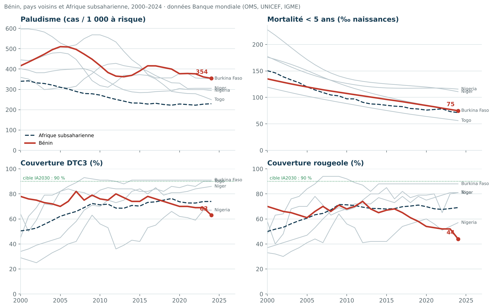
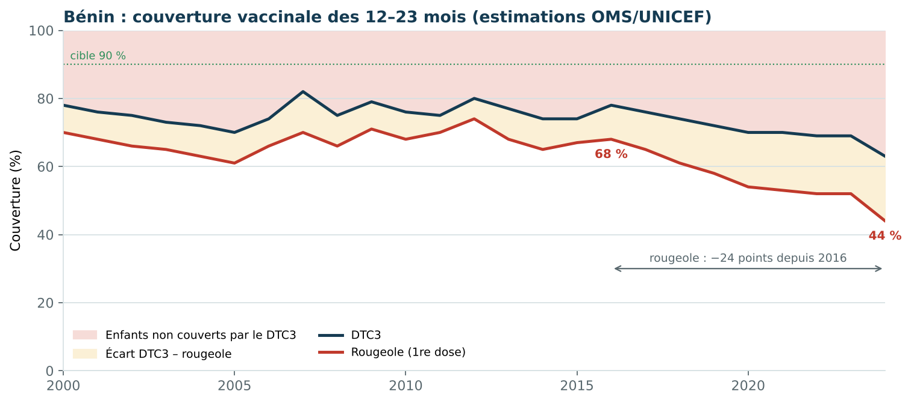
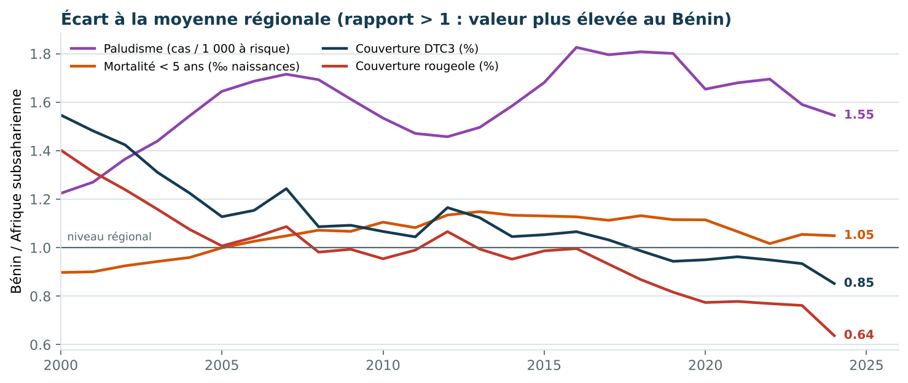

Paludisme, mortalité infantile et vaccination au Bénin, 2000–2024
Analyse descriptive d’indicateurs publics de l’OMS, de l’UNICEF et du groupe inter-agences des Nations unies (IGME), diffusés par la Banque mondiale, en comparaison avec quatre pays voisins et la moyenne d’Afrique subsaharienne.
Données publiques réelles · analyse reproductible1. Contexte
Le paludisme reste la première cause de consultation et d’hospitalisation des jeunes enfants au Bénin, où la transmission est permanente sur tout le territoire. La vaccination de routine (DTC3, rougeole) est l’un des moyens les plus efficaces de réduire la mortalité des moins de 5 ans ; l’agenda mondial IA2030 fixe une cible de 90 % de couverture. Suivre ces indicateurs ensemble permet de repérer les domaines où les progrès ralentissent.
2. Question et objectifs
Question : comment le Bénin a-t-il évolué depuis 2000 sur trois enjeux majeurs de santé de l’enfant, et comment se situe-t-il par rapport à ses voisins et à la région ?
- Décrire les tendances 2000–2024 de quatre indicateurs : incidence du paludisme, mortalité des moins de 5 ans, couvertures DTC3 et rougeole.
- Quantifier la variation récente (2015–2024) par une variation annuelle moyenne.
- Situer le Bénin par rapport au Togo, au Nigeria, au Burkina Faso, au Niger et à l’Afrique subsaharienne.
3. Données et méthode
Source : API publique de la Banque mondiale (indicateurs SH.MLR.INCD.P3, SH.DYN.MORT, SH.IMM.IDPT, SH.IMM.MEAS), qui reprend les estimations du Rapport mondial sur le paludisme (OMS), de l’IGME et des estimations OMS/UNICEF de couverture vaccinale (WUENIC). Extraction du 27 octobre 2026 : 600 valeurs, 6 zones, 25 années, aucune valeur manquante.
- Extraction :
scripts/fetch_data.pytélécharge les séries et les enregistre dansdata/indicateurs_bm.csv. - Indicateurs dérivés : variation 2000–2024, variation annuelle moyenne 2015–2024 (pente d’une régression log-linéaire), rapport Bénin / Afrique subsaharienne.
- Restitution :
scripts/analyse.pyproduit le tableau de synthèse et les trois figures (matplotlib).
Ces valeurs sont des estimations modélisées ou ajustées, pas des comptages exhaustifs ; elles peuvent être révisées lors des mises à jour annuelles. L’analyse est descriptive et écologique : elle compare des moyennes nationales et n’établit aucune causalité.
4. Résultats

scripts/analyse.py.Tableau de synthèse pour le Bénin
| Indicateur | 2000 | 2015 | 2024 | Variation 2000–2024 (%) | Variation annuelle 2015–2024 (%) | Bénin / région 2024 |
|---|---|---|---|---|---|---|
| Paludisme (cas / 1 000 à risque) | 416,0 | 390,8 | 354,2 | -14,8 | -1,59 | 1,55 |
| Mortalité < 5 ans (‰ naissances) | 135,0 | 96,1 | 74,7 | -44,7 | -2,77 | 1,05 |
| Couverture DTC3 (%) | 78,0 | 74,0 | 63,0 | -19,2 | -1,79 | 0,85 |
| Couverture rougeole (%) | 70,0 | 67,0 | 44,0 | -37,1 | -4,31 | 0,64 |
La vaccination recule depuis 2016
La couverture du DTC3 passe de 78 % en 2016 à 63 % en 2024, et celle de la rougeole de 68 % à 44 %, soit −4,3 % par an depuis 2015. Sur la même période, la moyenne régionale reste stable autour de 74 % et 69 %. L’écart croissant entre DTC3 et rougeole signale que de nombreux enfants commencent leur calendrier vaccinal sans le terminer.

Paludisme et mortalité : des progrès plus lents que la région
L’incidence du paludisme diminue (−1,6 % par an depuis 2015) mais reste 1,55 fois supérieure à la moyenne régionale. La mortalité des moins de 5 ans a baissé de 45 % depuis 2000 (135 à 75 ‰) ; elle reste légèrement au-dessus de la moyenne régionale (rapport 1,05), alors que le Togo voisin atteint 56 ‰.

5. Interprétation
Le recul de la vaccination est le signal le plus préoccupant : avec moins d’un enfant sur deux protégé contre la rougeole, le risque d’épidémies augmente, alors que le seuil d’immunité collective pour cette maladie est d’environ 95 %. Plusieurs hypothèses, non testées ici, mériteraient une investigation : ruptures de stock, effets durables de la pandémie de COVID-19 sur les services de routine, difficultés d’accès, hésitation vaccinale, ou modification des sources de données utilisées pour les estimations.
6. Limites
- Estimations nationales : elles masquent les écarts entre départements, milieux urbain et rural, et niveaux socio-économiques.
- Estimations révisables : la valeur 2024 peut être corrigée lors de la prochaine publication WUENIC.
- Analyse descriptive : aucune variable explicative n’est modélisée ; les comparaisons entre pays ne tiennent pas compte des différences de systèmes de santé.
- L’incidence du paludisme est modélisée par l’OMS à partir des cas notifiés et d’enquêtes ; son incertitude n’est pas fournie par l’API.
7. Conclusion et prolongements
Le Bénin progresse sur la mortalité des enfants, mais reste plus touché que la région par le paludisme et voit sa couverture vaccinale reculer depuis 2016. Prolongements possibles : analyse infranationale à partir des enquêtes démographiques et de santé (EDS) ou des données DHIS2, étude des abandons entre doses, et lien entre couverture vaccinale et cas de rougeole notifiés.
Données et code
Tableau complet · 24 lignes
| Indicateur | Pays | 2000 | 2015 | 2024 | Variation 2000–2024 (%) | Variation annuelle 2015–2024 (%) |
|---|---|---|---|---|---|---|
| Paludisme (cas / 1 000 à risque) | Bénin | 416,0 | 390,8 | 354,2 | -14,8 | -1,59 |
| Paludisme (cas / 1 000 à risque) | Togo | 445,1 | 372,4 | 249,2 | -44,0 | -4,46 |
| Paludisme (cas / 1 000 à risque) | Nigeria | 401,8 | 283,8 | 294,2 | -26,8 | 0,58 |
| Paludisme (cas / 1 000 à risque) | Burkina Faso | 597,2 | 417,9 | 353,5 | -40,8 | -0,99 |
| Paludisme (cas / 1 000 à risque) | Niger | 359,2 | 404,9 | 305,1 | -15,1 | -3,34 |
| Paludisme (cas / 1 000 à risque) | Afrique subsaharienne | 339,9 | 232,5 | 229,3 | -32,5 | -0,2 |
| Mortalité < 5 ans (‰ naissances) | Bénin | 135,0 | 96,1 | 74,7 | -44,7 | -2,77 |
| Mortalité < 5 ans (‰ naissances) | Togo | 119,2 | 75,2 | 56,1 | -52,9 | -3,18 |
| Mortalité < 5 ans (‰ naissances) | Nigeria | 177,3 | 117,8 | 115,6 | -34,8 | -0,11 |
| Mortalité < 5 ans (‰ naissances) | Burkina Faso | 176,0 | 100,8 | 74,9 | -57,4 | -3,24 |
| Mortalité < 5 ans (‰ naissances) | Niger | 227,9 | 125,4 | 110,7 | -51,4 | -1,3 |
| Mortalité < 5 ans (‰ naissances) | Afrique subsaharienne | 150,4 | 85,0 | 71,2 | -52,7 | -1,72 |
| Couverture DTC3 (%) | Bénin | 78,0 | 74,0 | 63,0 | -19,2 | -1,79 |
| Couverture DTC3 (%) | Togo | 64,0 | 82,0 | 90,0 | 40,6 | 1,08 |
| Couverture DTC3 (%) | Nigeria | 29,0 | 42,0 | 67,0 | 131,0 | 3,79 |
| Couverture DTC3 (%) | Burkina Faso | 45,0 | 91,0 | 91,0 | 102,2 | 0,0 |
| Couverture DTC3 (%) | Niger | 34,0 | 84,0 | 86,0 | 152,9 | 0,42 |
| Couverture DTC3 (%) | Afrique subsaharienne | 50,4 | 70,3 | 74,0 | 46,7 | 0,2 |
| Couverture rougeole (%) | Bénin | 70,0 | 67,0 | 44,0 | -37,1 | -4,31 |
| Couverture rougeole (%) | Togo | 58,0 | 75,0 | 81,0 | 39,7 | 0,98 |
| Couverture rougeole (%) | Nigeria | 33,0 | 42,0 | 57,0 | 72,7 | 2,03 |
| Couverture rougeole (%) | Burkina Faso | 48,0 | 88,0 | 88,0 | 83,3 | 0,0 |
| Couverture rougeole (%) | Niger | 37,0 | 85,0 | 81,0 | 118,9 | -0,68 |
| Couverture rougeole (%) | Afrique subsaharienne | 49,9 | 67,9 | 69,1 | 38,4 | -0,07 |
Script d’extraction · fetch_data.py
"""Télécharge les indicateurs publics de la Banque mondiale (sources OMS/UNICEF/IGME).
Usage : python scripts/fetch_data.py
Écrit data/indicateurs_bm.csv (format long) ; à relancer pour actualiser.
"""
import csv
import json
import urllib.request
from datetime import date
from pathlib import Path
COUNTRIES = {"BEN": "Bénin", "TGO": "Togo", "NGA": "Nigeria", "BFA": "Burkina Faso", "NER": "Niger", "SSF": "Afrique subsaharienne"}
INDICATORS = {
"SH.MLR.INCD.P3": "Incidence du paludisme (pour 1 000 personnes à risque)",
"SH.DYN.MORT": "Mortalité des moins de 5 ans (pour 1 000 naissances vivantes)",
"SH.IMM.IDPT": "Couverture vaccinale DTC3 (% des 12-23 mois)",
"SH.IMM.MEAS": "Couverture vaccinale rougeole (% des 12-23 mois)",
}
OUT = Path(__file__).resolve().parents[1] / "data" / "indicateurs_bm.csv"
def fetch(indicator):
url = (f"https://api.worldbank.org/v2/country/{';'.join(COUNTRIES)}/indicator/{indicator}"
"?format=json&date=2000:2024&per_page=1000")
with urllib.request.urlopen(url, timeout=60) as response:
meta, rows = json.load(response)
if meta.get("pages", 1) != 1:
raise RuntimeError(f"{indicator}: pagination inattendue")
return rows
def main():
records = []
for code, label in INDICATORS.items():
for row in fetch(code):
if row["value"] is None:
continue
records.append({"country_code": row["countryiso3code"], "country": COUNTRIES[row["countryiso3code"]],
"indicator_code": code, "indicator": label, "year": int(row["date"]), "value": row["value"]})
records.sort(key=lambda r: (r["indicator_code"], r["country_code"], r["year"]))
OUT.parent.mkdir(exist_ok=True)
with OUT.open("w", newline="", encoding="utf-8") as handle:
writer = csv.DictWriter(handle, fieldnames=list(records[0]))
writer.writeheader()
writer.writerows(records)
print(f"{len(records)} valeurs écrites dans {OUT.name} (extraction du {date.today().isoformat()})")
if __name__ == "__main__":
main()
Script d’analyse · analyse.py
"""Analyse descriptive des indicateurs de santé publique du Bénin (2000-2024).
Usage : python scripts/analyse.py
Lit data/indicateurs_bm.csv, écrit les tableaux et figures dans results/.
"""
import csv
import math
from collections import defaultdict
from pathlib import Path
import matplotlib
matplotlib.use("Agg")
import matplotlib.pyplot as plt
ROOT = Path(__file__).resolve().parents[1]
RESULTS = ROOT / "results"
INK, MUTED, GRID, BENIN, REGION = "#153b52", "#59686e", "#d7e1e4", "#c0392b", "#153b52"
SHORT = {
"SH.MLR.INCD.P3": "Paludisme (cas / 1 000 à risque)",
"SH.DYN.MORT": "Mortalité < 5 ans (‰ naissances)",
"SH.IMM.IDPT": "Couverture DTC3 (%)",
"SH.IMM.MEAS": "Couverture rougeole (%)",
}
plt.rcParams.update({"font.family": "DejaVu Sans", "font.size": 10, "axes.spines.top": False,
"axes.spines.right": False, "axes.edgecolor": GRID, "xtick.color": MUTED, "ytick.color": MUTED})
def load():
series = defaultdict(dict)
names = {}
with (ROOT / "data/indicateurs_bm.csv").open(encoding="utf-8") as handle:
for row in csv.DictReader(handle):
series[(row["indicator_code"], row["country_code"])][int(row["year"])] = float(row["value"])
names[row["country_code"]] = row["country"]
return series, names
def annual_change(points):
"""Variation annuelle moyenne (%) : pente d'une régression log-linéaire."""
years = sorted(points)
xs = [y - years[0] for y in years]
ys = [math.log(points[y]) for y in years]
mx, my = sum(xs) / len(xs), sum(ys) / len(ys)
slope = sum((x - mx) * (y - my) for x, y in zip(xs, ys)) / sum((x - mx) ** 2 for x in xs)
return (math.exp(slope) - 1) * 100
def summary(series, names):
rows = []
for code in SHORT:
for country in ("BEN", "TGO", "NGA", "BFA", "NER", "SSF"):
s = series[(code, country)]
recent = {y: v for y, v in s.items() if y >= 2015}
rows.append({
"indicateur": SHORT[code], "pays": names[country],
"valeur_2000": round(s[2000], 1), "valeur_2015": round(s[2015], 1), "valeur_2024": round(s[2024], 1),
"variation_2000_2024_pct": round((s[2024] / s[2000] - 1) * 100, 1),
"variation_annuelle_2015_2024_pct": round(annual_change(recent), 2),
"rapport_benin_region_2024": round(series[(code, "BEN")][2024] / series[(code, "SSF")][2024], 2) if country == "BEN" else "",
})
with (RESULTS / "synthese_indicateurs.csv").open("w", newline="", encoding="utf-8") as handle:
writer = csv.DictWriter(handle, fieldnames=list(rows[0]))
writer.writeheader()
writer.writerows(rows)
return rows
def save(fig, name):
fig.savefig(RESULTS / name, dpi=160, bbox_inches="tight", facecolor="white")
plt.close(fig)
def small_multiples(series, names):
fig, axes = plt.subplots(2, 2, figsize=(12, 7.5), sharex=True)
for ax, code in zip(axes.flat, SHORT):
for country in ("TGO", "NGA", "BFA", "NER"):
s = series[(code, country)]
ax.plot(list(s), list(s.values()), color="#b8c6cc", lw=1.2)
ax.text(2024.4, s[2024], names[country], fontsize=7.5, color=MUTED, va="center")
region = series[(code, "SSF")]
ax.plot(list(region), list(region.values()), color=REGION, lw=1.8, ls="--", label="Afrique subsaharienne")
benin = series[(code, "BEN")]
ax.plot(list(benin), list(benin.values()), color=BENIN, lw=2.6, label="Bénin")
ax.scatter([2024], [benin[2024]], color=BENIN, zorder=3)
ax.annotate(f"{benin[2024]:.0f}", (2024, benin[2024]), xytext=(-6, 8), textcoords="offset points", ha="right", color=BENIN, fontweight="bold")
if code in ("SH.IMM.IDPT", "SH.IMM.MEAS"):
ax.axhline(90, color="#2f8f5b", lw=1, ls=":")
ax.text(2000.3, 91.5, "cible IA2030 : 90 %", fontsize=7.5, color="#2f8f5b")
ax.set_ylim(0, 100)
else:
ax.set_ylim(0, None)
ax.set_title(SHORT[code], loc="left", color=INK, fontweight="bold")
ax.yaxis.grid(True, color=GRID)
ax.set_xlim(2000, 2027)
axes[0, 0].legend(frameon=False, fontsize=8.5, loc="lower left")
fig.suptitle("Bénin, pays voisins et Afrique subsaharienne, 2000–2024 · données Banque mondiale (OMS, UNICEF, IGME)",
x=0.01, ha="left", color=MUTED, fontsize=9.5)
fig.tight_layout()
save(fig, "fig_tendances_benin_region.png")
def vaccination_gap(series):
dtc3, measles = series[("SH.IMM.IDPT", "BEN")], series[("SH.IMM.MEAS", "BEN")]
years = sorted(dtc3)
fig, ax = plt.subplots(figsize=(11, 4.6))
ax.fill_between(years, [100] * len(years), [dtc3[y] for y in years], color="#f6dcd8", label="Enfants non couverts par le DTC3")
ax.fill_between(years, [dtc3[y] for y in years], [measles[y] for y in years], color="#fbf0d6", label="Écart DTC3 – rougeole")
ax.plot(years, [dtc3[y] for y in years], color=INK, lw=2.2, label="DTC3")
ax.plot(years, [measles[y] for y in years], color=BENIN, lw=2.2, label="Rougeole (1re dose)")
ax.axhline(90, color="#2f8f5b", lw=1, ls=":")
ax.text(2000.2, 91.5, "cible 90 %", fontsize=8, color="#2f8f5b")
ax.annotate("", xy=(2024, 30), xytext=(2016, 30), arrowprops={"arrowstyle": "<->", "color": MUTED})
ax.text(2020, 32, "rougeole : −24 points depuis 2016", ha="center", fontsize=8.5, color=MUTED)
for y in (2016, 2024):
ax.annotate(f"{measles[y]:.0f} %", (y, measles[y]), xytext=(0, -14), textcoords="offset points", ha="center", color=BENIN, fontsize=9, fontweight="bold")
ax.set(ylim=(0, 100), xlim=(2000, 2024), ylabel="Couverture (%)")
ax.yaxis.grid(True, color=GRID)
ax.legend(frameon=False, fontsize=8.5, ncol=2, loc="lower left")
ax.set_title("Bénin : couverture vaccinale des 12–23 mois (estimations OMS/UNICEF)", loc="left", color=INK, fontweight="bold")
save(fig, "fig_vaccination_benin.png")
def ratio_to_region(series):
fig, ax = plt.subplots(figsize=(11, 4.2))
colours = {"SH.MLR.INCD.P3": "#8e44ad", "SH.DYN.MORT": "#d35400", "SH.IMM.IDPT": INK, "SH.IMM.MEAS": BENIN}
for code, label in SHORT.items():
b, r = series[(code, "BEN")], series[(code, "SSF")]
years = sorted(set(b) & set(r))
ratios = [b[y] / r[y] for y in years]
ax.plot(years, ratios, color=colours[code], lw=2, label=label)
ax.text(2024.3, ratios[-1], f"{ratios[-1]:.2f}", color=colours[code], va="center", fontsize=9, fontweight="bold")
ax.axhline(1, color=MUTED, lw=1)
ax.text(2000.2, 1.03, "niveau régional", fontsize=8, color=MUTED)
ax.set(xlim=(2000, 2026), ylabel="Bénin / Afrique subsaharienne")
ax.yaxis.grid(True, color=GRID)
ax.legend(frameon=False, fontsize=8.5, ncol=2, loc="upper left")
ax.set_title("Écart à la moyenne régionale (rapport > 1 : valeur plus élevée au Bénin)", loc="left", color=INK, fontweight="bold")
save(fig, "fig_rapport_region.png")
def main():
RESULTS.mkdir(exist_ok=True)
series, names = load()
rows = summary(series, names)
small_multiples(series, names)
vaccination_gap(series)
ratio_to_region(series)
for row in rows:
if row["pays"] == "Bénin":
print(row)
if __name__ == "__main__":
main()
Reproduire : pip install matplotlib, puis python scripts/fetch_data.py et python scripts/analyse.py.